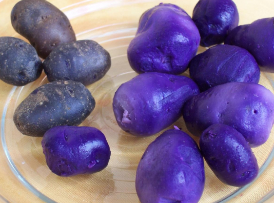

Характерной особенностью этого картофеля считается не только экзотический цвет кожицы, но и мякоти. При этом оттенки колеблются от нежно-розового до темно-фиолетового. Получено это необычное растение было без применения методов генного модифицирования: специалисты использовали исключительно методы классической селекции. Скрещивали привычный для нас картофель с его диким родственником из Южной Америки.